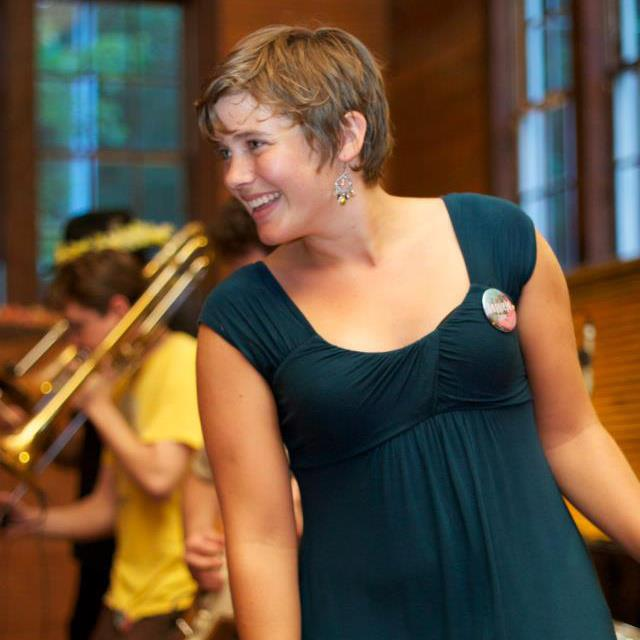

About Me

Dancing, boardgames, improv, facilitating FUN! These are the things that bring Maggie Jo joy, and each of her creative endeavors are intended to spread that joy to her communities. As an aspiring web developer, she brings her signature humor, imagination, and confidence to every project.
Maggie Jo grew up in Charleston, SC and moved to Chicago after spending time in the mountains of Asheville, NC. She loves her Roscoe Village apartment filled with boardgames and musical instruments, where she lives with her partner Derek and their very fluffy dog, Gator. Maggie Jo tours the country calling contra dances, and can be seen performing improv with her team Proud Parents at CIC Theater.
Maggie Jo's celebrity dinner guest list, living or dead: Bob Odenkirk, Shari Lewis, Jamey Stegmaier, Tim Gunn, Hank Azaria, Janelle Monae, Joss Whedon, Jonathan Van Ness, Sutton Foster, George Harrison, Bo Burnham, Michelle Visage, Bill Amend.